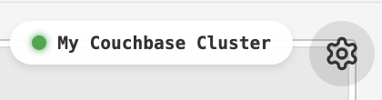
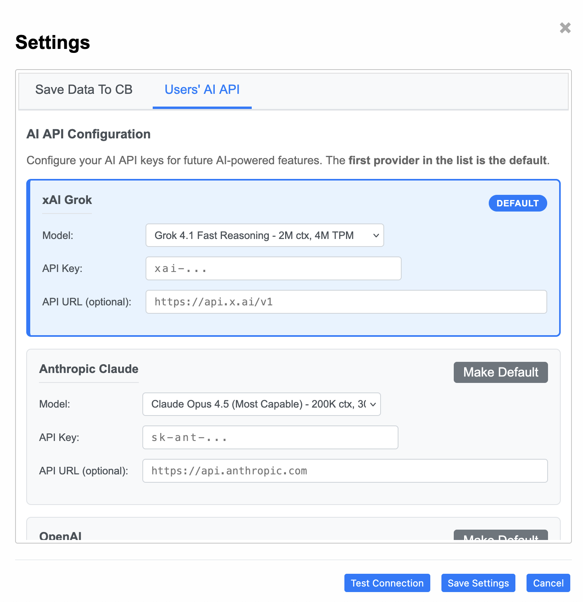

1. Get the Tool
Choose between the New Desktop App (with AI analysis) or the simple Classic Static HTML (browser-only).
# New Desktop App (with AI analysis, embedded Couchbase Lite storage) docker pull fujioturner/couchbase-query-analyzer:4.0.0 docker run -p 8888:8888 fujioturner/couchbase-query-analyzer:4.0.0 # Or use 'latest' tag (always points to New Desktop App) docker run -p 8888:8888 fujioturner/couchbase-query-analyzer:latest
After running, open http://localhost:8888
Download for macOS
New Desktop App v4.0.0
- Download
QueryAnalyzer-4.0.0-macos.dmgfrom GitHub Releases - Open the DMG and drag QueryAnalyzer.app to Applications
- Double-click to run. Security warning? Go to System Settings → Privacy & Security → Allow.
The app will open http://localhost:8888 automatically
Download for Windows
New Desktop App v4.0.0
- Download
QueryAnalyzer-4.0.0-windows.zipfrom GitHub Releases - Extract and double-click
QueryAnalyzer.exeto run - "Windows protected your PC"? Click "More info" → "Run anyway".
The app will open http://localhost:8888 automatically
🌐
Browser Only - No Installation
Classic Static HTML v3.29.3
Just open in your browser - no server, no installation required:
Note: The Classic Static HTML does not include AI analysis or settings persistence. For those features, use the New Desktop App above.
2. Setup AI Analysis (New Desktop App only)
📦 No external database setup required.
Starting in v4.0.0, the New Desktop App stores all analysis data, preferences, and AI history locally using embedded Couchbase Lite. There is nothing to install, no bucket to create, and no credentials to configure for storage. To analyze queries, run
SELECT *, meta().plan FROM system:completed_requests against your cluster from any client (cbq, Capella UI, Workbench, etc.) and paste or upload the JSON output into the analyzer.
Get an API Key from xAI Grok, Anthropic Claude, or OpenAI for AI-powered query analysis.
| Grok x.ai |
|
|
|---|---|---|
| Sign Up → Get API Key | Sign Up → Get API Key | Sign Up → Get API Key |
| In Settings Icon  , select "Users' AI API" tab, paste API Key, click Save. |
||
Ready
🎉 Ready to Analyze!
You can now perform AI-powered analysis of your slow queries.
Start Analyzing → User Guide